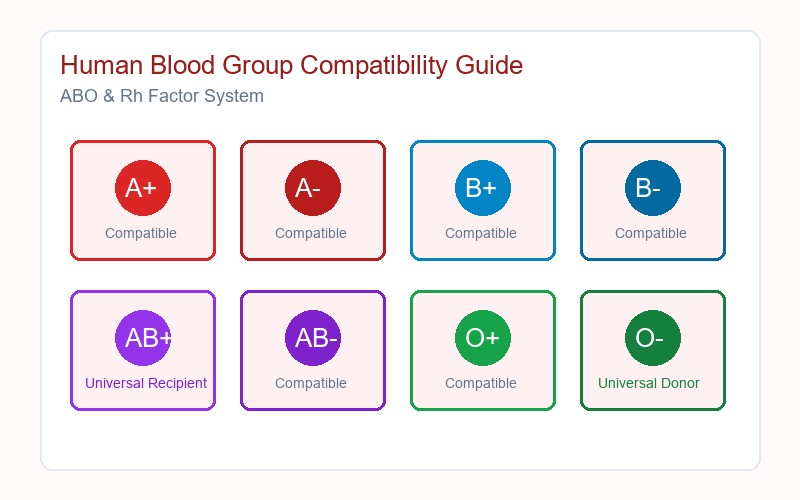
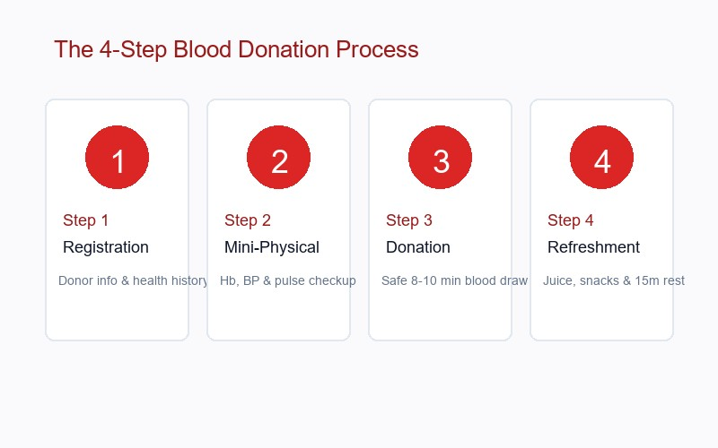

Type O: The Universal Red Cell
O-Negative red blood cells contain neither A, B, nor Rh antigens, making them safe for transfusion into any emergency patient regardless of recipient blood type.
Donate Blood, Save Lives, Be Someone's Hope.
Blood donation is a compassionate, voluntary clinical procedure in which a healthy person has blood drawn for subsequent testing, component separation, and transfusion into individuals facing medical emergencies or chronic illnesses. Below is a comprehensive guide to understanding how this miraculous procedure operates, from donation types to biological compatibility.
At its core, blood donation is the voluntary gift of healthy blood collected by licensed phlebotomists using sterilized, disposable needles and collection bags. Donated blood is carefully screened for infectious markers and divided into vital clinical components before reaching hospital wards.
An average adult human body contains approximately 4.5 to 5.5 liters of blood. A typical whole-blood donation removes only about 450 mL—which the body completely replenishes fluid-wise within 24 to 48 hours!
Modern healthcare relies heavily on blood reserves for countless emergency procedures, including complex cardiac surgeries, organ transplantations, severe burn management, sickle-cell disease management, and emergency neonatal transfusions.

Every two seconds, someone in the world requires blood. Just three teaspoons of donated blood can be enough to sustain the life of a premature newborn baby.
Human blood is grouped based on the presence or absence of specific protein markers called antigens (A and B) and the Rh (Rhesus) factor on the surface of red blood cells. This yields the eight standard blood groups:

O-Negative red blood cells contain neither A, B, nor Rh antigens, making them safe for transfusion into any emergency patient regardless of recipient blood type.
AB-Positive patients have all antigens and can safely receive red blood cells from any blood type. Furthermore, AB individuals are the universal plasma donors.
Important Note: Blood compatibility and clinical donor eligibility are determined exclusively by qualified blood-bank professionals and certified physicians through rigorous cross-matching tests. Never self-determine your suitability for a patient without professional clinical consultation.
Donors can contribute blood in multiple specialized formats based on blood center needs:
The entire experience takes roughly 45 minutes, while the actual blood draw takes only 8 to 10 minutes:

Most healthy individuals can become voluntary donors provided they satisfy these standard criteria:
Each donation provides an on-the-spot screening of your vital metrics, helping identify early indicators of elevated blood pressure or borderline hemoglobin levels.
The human body burns roughly 600 calories synthesizing new red blood cells after donation, stimulating natural hematopoietic stem-cell renewal.
Fact: You only feel a minor brief pinch when the sterile needle is inserted for one second. The remaining 8 minutes of collection are completely painless.
Fact: It is 100% impossible to contract any infection from donating blood. Every needle, tube, and collection pouch is brand new, factory-sterile, and discarded immediately after a single use.
Fact: Donating removes less than 10% of your total blood volume. Your plasma volume returns to normal within 24 hours simply by drinking water and enjoying meals.